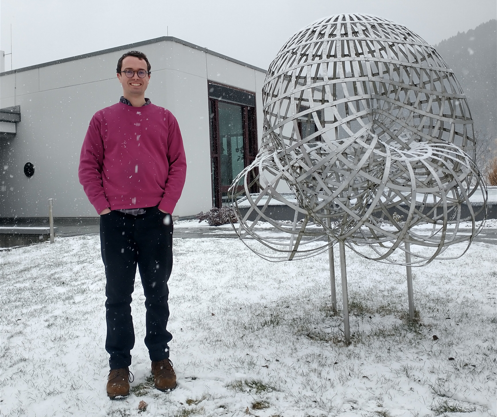
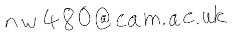

Nicholas Williams
 Since the beginning of September 2022, I am a Postdoctoral Research Associate at Lancaster University working with David Pauksztello. During August and September this year, I am also a visiting researcher at the Okinawa Institute of Science and Technology.
I received my doctorate from the University of Cologne in 2022 under the supervision of Sibylle Schroll.
Following that, I was a JSPS short-term postdoctoral research fellow at the University of Tokyo working with Osamu Iyama from late May to late August 2022.
My research focuses on the representation theory of finite-dimensional algebras and combinatorics.
In the representation theory of finite-dimensional algebras I am particularly interested in
- higher homological algebra,
- maximal green sequences,
- stability conditions,
- relations with cluster algebras.
- partially ordered sets, especially the higher Bruhat and Stasheff–Tamari orders,
- polytopes and their triangulations, especially cyclic polytopes.
You can find a copy of my CV here (updated 29/9/23).
GitHub, Google Scholar, Math Genealogy, ORCID, ResearchGate, Scopus.
In my spare time, I like reading Iris Murdoch novels.
Preprints
| 9/2023 | Steenrod operations via higher Bruhat orders, (with Guillaume Laplante-Anfossi) arXiv. |
| 2/2023 | A geometric perspective on the τ-cluster morphism category, (with Sibylle Schroll, Aran Tattar, and Hipolito Treffinger) arXiv. |
| 1/2023 | A structural view of maximal green sequences, (with Mikhail Gorsky) arXiv. |
| 8/2022 | Triangulations of prisms and preprojective algebras of type A, (with Osamu Iyama) arXiv. |
Journal publications
| To appear | A survey of congruences and quotients of partially ordered sets |
| EMS Surveys in Mathematical Sciences. arXiv. | |
| To appear | The two higher Stasheff–Tamari orders are equal |
| Journal of the European Mathematical Society. arXiv. | |
| 4/2024 | Stability spaces of string and band modules, (with Sibylle Schroll, Aran Tattar, Hipolito Treffinger, and Yadira Valdivieso) |
| Journal of Pure and Applied Algebra. DOI, arXiv. | |
| 6/2023 | Quiver combinatorics and triangulations of cyclic polytopes |
| Algebraic Combinatorics. DOI, arXiv. | |
| 2/2023 | The first higher Stasheff–Tamari orders are quotients of the higher Bruhat orders |
| Electronic Journal of Combinatorics. DOI, arXiv. | |
| 10/2022 | New interpretations of the higher Stasheff–Tamari orders |
| Advances in Mathematics. DOI, arXiv. | |
| 9/2021 | The combinatorics of tensor products of higher Auslander algebras of type A, (with Jordan McMahon) |
| Glasgow Mathematical Journal. DOI, arXiv. |
Conference proceedings
| To appear | The higher Stasheff–Tamari orders in representation theory |
| Proceedings of the 2020 International Conference on Representations of Algebras. arXiv. | |
| 2022 | Triangulations of cyclic polytopes and the higher Auslander algebras of type A |
| Various issues on representation theory and related topics, RIMS Kōkyūroku No. 2234. Link. | |
| 2021 | The first higher Stasheff–Tamari orders are quotients of the higher Bruhat orders |
| Proceedings of the 33rd International Conference on Formal Power Series and Algebraic Combinatorics, Séminaire Lotharingien de Combinatoire 85B (2021), Art. 6, 12. Link. |
Other publications
| 7/2022 | Microthesis: Triangulations of cyclic polytopes in representation theory |
| London Mathematical Society Newsletter, No. 501, 33-34. Link. | |
| 4/2022 | Higher-dimensional combinatorics in representation theory |
| Doctoral thesis, University of Cologne. Link. |
Recent talks
| 9/2023 | Donaldson–Thomas theory of quivers with potential |
| Exact Asymptotics Theoretical Sciences Visiting Program, Okinawa Institute of Science and Technology | |
| 8/2023 | Higher-dimensional cluster combinatorics and representation theory |
| OIST Representation Theory Seminar, Okinawa Institute of Science and Technology | |
| 8/2023 | Triangulations of cyclic polytopes through the lens of reconfiguration |
| Minisymposium on Combinatorial Reconfiguration, International Congress on Industrial and Applied Mathematics, Waseda University, Tokyo | |
| 8/2023 | Combinatorics of KP solitons |
| Exact Asymptotics Theoretical Sciences Visiting Program, Okinawa Institute of Science and Technology | |
| 7/2023 | Triangulations of prisms and preprojective algebras of type A |
| Combinatorial Representation Theory in Leeds, University of Leeds | |
| 6/2023 | A structural view of maximal green sequences |
| Cluster Structures in the North, University of Central Lancashire | |
| 4/2023 | A structural view of maximal green sequences |
| Maurice Auslander Distinguished Lectures and International Conference | |
| 2/2023 | A structural view of maximal green sequences |
| Algebra Group Seminar, University of Cologne | |
| 12/2022 | Cyclic polytopes and representation theory |
| Representation Theory of Algebras session, Canadian Mathematical Society Winter Meeting, Toronto | |
| 11/2022 | The higher Stasheff–Tamari orders on triangulations of cyclic polytopes |
| Séminaire du LaCIM, Université du Québec à Montréal | |
| 11/2022 | Cyclic polytopes and representation theory |
| Geometry and Mathematical Physics Seminar, University of Birmingham | |
| 11/2022 | Cyclic polytopes and representation theory |
| Pure Mathematics Seminar, Lancaster University | |
| 10/2022 | Mutation in higher cluster categories |
| Seminar@Aarhus, Aarhus University | |
| 9/2022 | A structural approach to maximal green sequences |
| Silting theory, Algebras and Representations, Charles University, Prague | |
| 7/2022 | Algebraic interpretation of the higher Stasheff–Tamari orders |
| Various Issues on Representation Theory and Related Topics, Research Institute for Mathematical Sciences, Kyoto University | |
| 7/2022 | Cyclic polytopes and higher Auslander–Reiten theory III |
| Tokyo–Nagoya Algebra Seminar, University of Tokyo and Nagoya University | |
| 6/2022 | Cyclic polytopes and higher Auslander–Reiten theory II |
| Tokyo–Nagoya Algebra Seminar, University of Tokyo and Nagoya University | |
| 6/2022 | Mutating cluster-tilting objects in (d + 2)-angulated cluster categories |
| FD Seminar | |
| 6/2022 | Cyclic polytopes and higher Auslander–Reiten theory I |
| Tokyo–Nagoya Algebra Seminar, University of Tokyo and Nagoya University | |
| 2/2022 | Equivalence of maximal green sequences |
| Paris algebra seminar, Institut de Mathématiques de Jussieu-Paris Rive Gauche | |
| 1/2022 | The first higher Stasheff–Tamari orders are quotients of the higher Bruhat orders |
| Formal Power Series and Algebraic Combinatorics | |
| 1/2022 | An algebraic interpretation of the higher Stasheff–Tamari orders |
| Aachen–Bochum–Cologne Darstellungstheorie Seminar | |
| 12/2021 | Cyclic polytopes and higher Auslander–Reiten theory |
| Tokyo–Nagoya Algebra Seminar |
Translations
I have translated a couple of papers of Carathéodory from German into English. I make no claim to any of the mathematics in these papers.
It is also not impossible that I have introduced errors in the process of translation.
| Über den Variabilitätsbereich der Koeffizienten von Potenzreihen, die gegebene Werte nicht annehmen |
| Constantin Carathéodory |
| Mathematische Annalen (1907), Volume: 64, pp. 95–115. |
| Original, Translation |
| Über den Variabilitätsbereich der Fourier’schen Konstanten von positiven harmonischen Funktionen |
| Constantin Carathéodory |
| Rendiconti del Circolo Matematico di Palermo (1911), Volume: 32, pp. 193–217. |
| Original, Translation |
Conference organisation
I organised this conference with Aran Tattar.